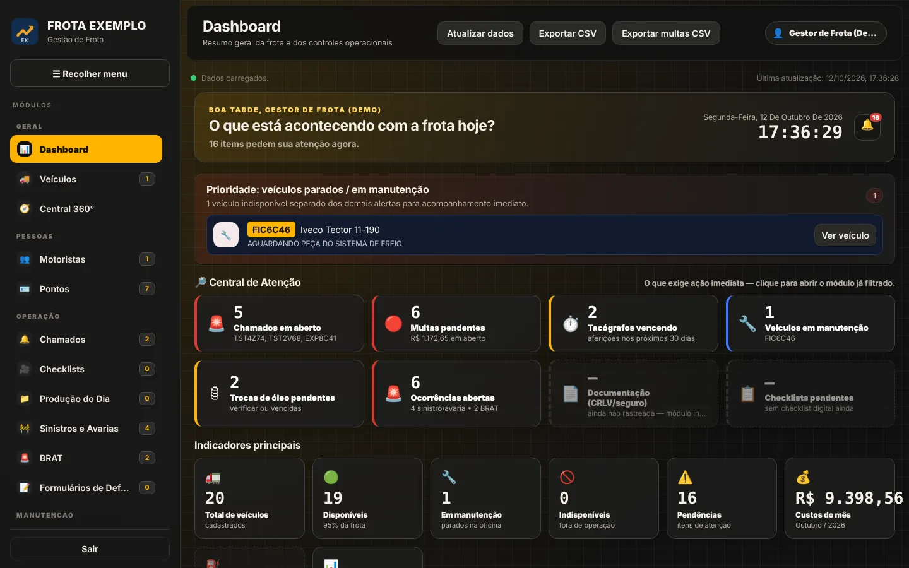
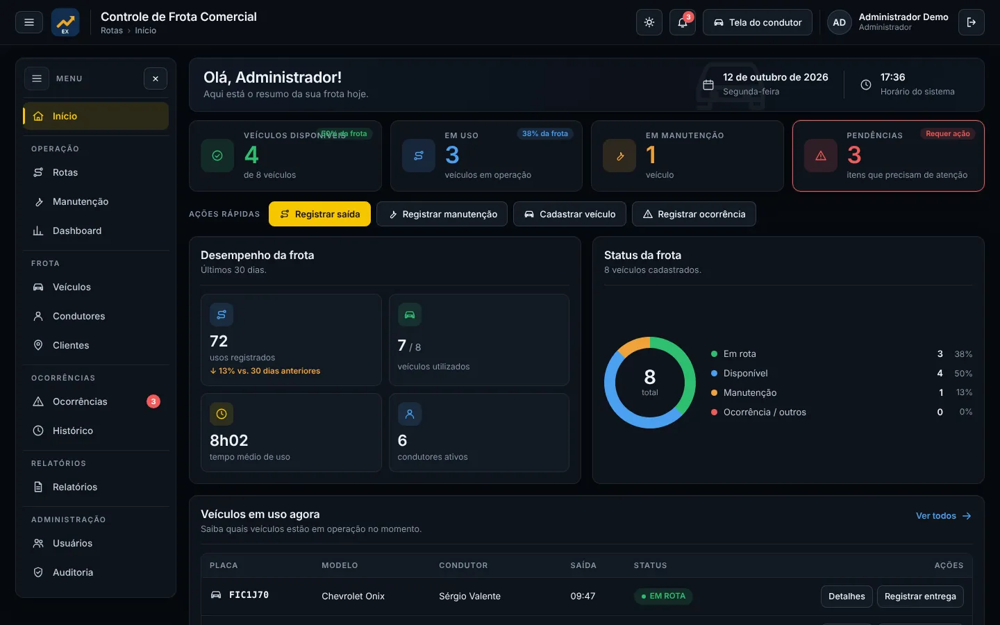
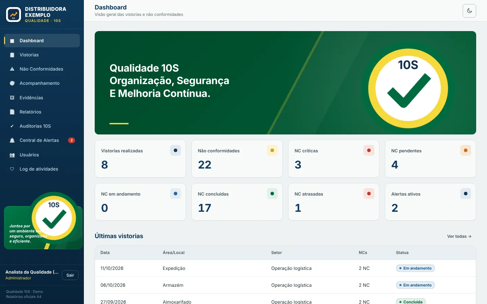
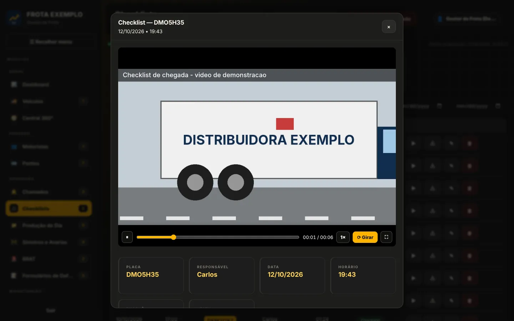
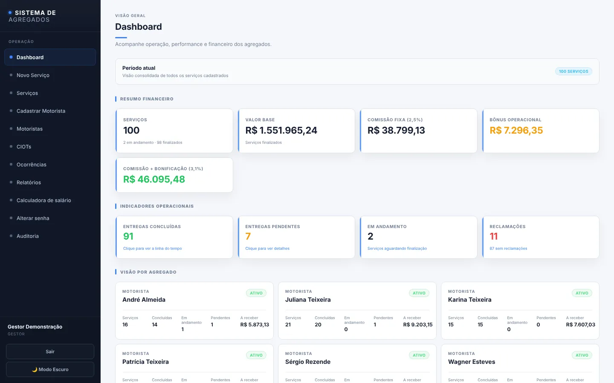

Informação espalhada em planilhas→Dados centralizados
Uma base única por processo, com histórico, anexos e consulta por registro, em vez de arquivos separados que precisam ser consolidados à mão.
Transformo processos manuais em fluxos digitais organizados
Tenho experiência prática em processos empresariais, iniciativa para identificar problemas e capacidade de desenvolver soluções digitais para automatizar rotinas, organizar informações e melhorar a eficiência operacional. Apliquei isso na DIME Distribuidora, criando sistemas internos para áreas diferentes da empresa.
Os problemas abaixo apareceram na operação de uma distribuidora, mas existem em empresas de qualquer setor. Cada um aponta para o projeto em que foi tratado.
Uma base única por processo, com histórico, anexos e consulta por registro, em vez de arquivos separados que precisam ser consolidados à mão.
Comissões, consumo médio e leitura de documentos feitos pelo sistema com regras definidas, reduzindo trabalho repetitivo e erro de digitação.
Assinatura digital, fotos, vídeo e trilha de alterações ligados a cada registro, para saber o que aconteceu, quando e por quem.
Vencimentos, pendências e ações corretivas com status calculado e alertas, em vez de depender da memória ou de conferência periódica.
Cada ficha mostra o período documentado, a situação atual e a minha contribuição. As demonstrações usam empresa e dados fictícios.
Os controles do setor ficavam em planilhas separadas. Consolidar dados era manual, prazos dependiam de conferência e o histórico de cada item estava espalhado.
Informações do setor em um só lugar, rastreabilidade de quem alterou cada registro e relatórios mensais gerados pelo próprio sistema.
Entrar na demo: qualquer usuário e senha
A demonstração interativa abre na versão publicada deste portfólio.

Era preciso saber quem estava com cada carro, por onde passou e ter comprovação da retirada e da devolução.
Retiradas e devoluções sem papel, visão dos carros em uso e histórico por veículo e por condutor.
Controle: admin@exemplo.com · Condutor: condutor@exemplo.com · qualquer senha
A demonstração interativa abre na versão publicada deste portfólio.

O relatório de vistoria era um documento estático. Fotos, não conformidades, prazos e verificação de eficácia não ficavam ligados nem eram acompanhados de forma centralizada.
Registros padronizados, evidências ligadas a cada não conformidade e relatório pronto sem montagem manual.
Entrar na demo: qualquer e-mail e senha
A demonstração interativa abre na versão publicada deste portfólio.

Avarias e ocorrências eram difíceis de comprovar depois: faltava registrar o estado do veículo na chegada e guardar fotos, vídeos e documentos junto do caso.
Registros padronizados com evidência, ligados ao veículo e consultáveis no sistema de frota.
A demonstração interativa abre na versão publicada deste portfólio.

Serviços de motoristas agregados, CIOTs, ocorrências e o cálculo da remuneração precisavam ser organizados e conferidos manualmente.
Ainda em desenvolvimento. Na demonstração, as regras de remuneração já são aplicadas de forma padronizada.
Entrar na demo: qualquer e-mail e senha
A demonstração interativa abre na versão publicada deste portfólio.

Os motoristas precisavam de um canal simples para informar problemas do veículo à equipe de frota.
Aplicação independente, acessada pelo celular via QR Code, em que o motorista registra o problema e define a prioridade em quatro níveis. Os chamados chegam ao sistema de frota para tratamento.
Automatizar tarefas do dia a dia no computador com um assistente que entende comandos em linguagem natural.
Assistente para Windows com comandos por voz e texto, reconhecimento e síntese de fala, memória e execução de automações. A arquitetura permite trocar o modelo de IA, inclusive por modelos locais.
Definição do critério de consumo médio ponderado (km/L) e de regras para descartar leituras de hodômetro inconsistentes, com relatórios para a gestão.
Reconhecimento de texto em notas fiscais de serviço para localizar as placas dos veículos, sem conferir documento por documento.
A experiência na DIME Distribuidora foi onde aprendi a enxergar processos de dentro: primeiro executando, depois identificando o que travava e construindo a solução.
Em vez de uma lista solta, a tabela liga cada competência aos projetos que a comprovam.
| Frota | Passeio | Qualidade | Checklists | Agregados | Rodoviário | ORION | |
|---|---|---|---|---|---|---|---|
| Análise de processosmapear a rotina e achar o gargalo | |||||||
| Digitalização de controlesdo papel e da planilha para o sistema | |||||||
| Automação de cálculos e alertasregras aplicadas pelo sistema | |||||||
| Estruturação de fluxosetapas, status e responsáveis | |||||||
| Rastreabilidade e evidênciashistórico, anexos, auditoria | |||||||
| Integração de ferramentasbanco, armazenamento, mapas, IA |
UNISUAM · em andamento